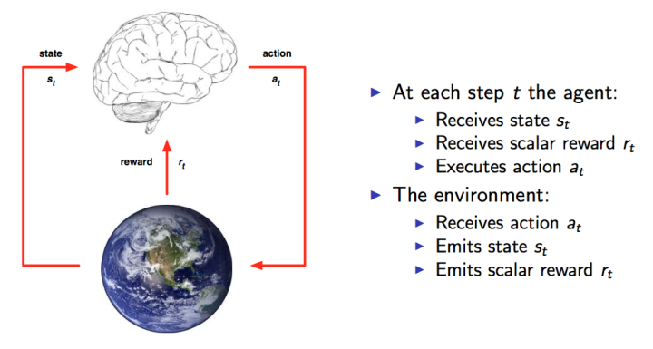
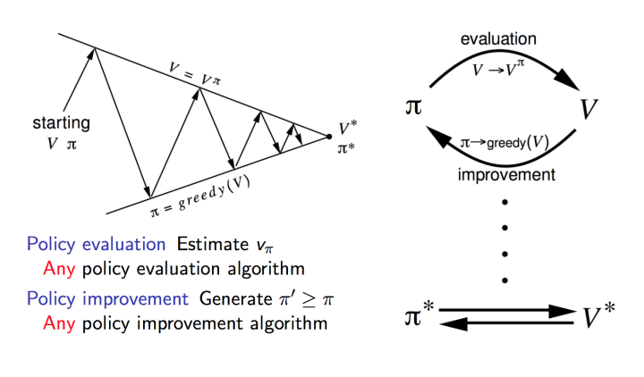
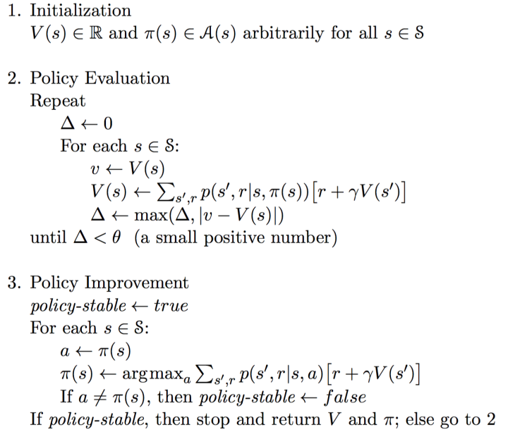
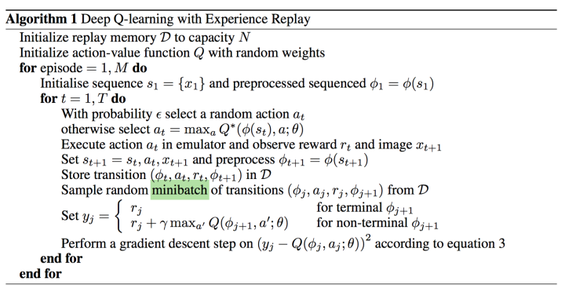

深度强化学习Deep Reinforcement Learning是将深度学习与强化学习结合起来，从而实现从Perception感知到Action动作的端对端学习End-to-End Learning的一种全新的算法。深度强化学习具备使机器人实现真正完全自主地学习一种甚至多种技能的潜力。
深度强化学习的起源
深度强化学习是深度学习与强化学习相结合的产物。
深度学习
深度学习（deep learning）是机器学习的分支，是一种试图使用包含复杂结构或由多重非线性变换构成的多个处理层对数据进行高层抽象的算法。
深度学习是机器学习中一种基于对数据进行表征学习的算法。观测值（例如一幅图像）可以使用多种方式来表示，如每个像素强度值的向量，或者更抽象地表示成一系列边、特定形状的区域等。而使用某些特定的表示方法更容易从实例中学习任务（例如，人脸识别或面部表情识别）。深度学习的好处是用非监督式或半监督式的特征学习和分层特征提取高效算法来替代手工获取特征。
表征学习的目标是寻求更好的表示方法并创建更好的模型来从大规模未标记数据中学习这些表示方法。表示方法来自神经科学，并松散地创建在类似神经系统中的信息处理和对通信模式的理解上，如神经编码，试图定义拉动神经元的反应之间的关系以及大脑中的神经元的电活动之间的关系。
至今已有数种深度学习框架，如深度神经网络、卷积神经网络和深度置信网络和递归神经网络已被应用在计算机视觉、语音识别、自然语言处理、音频识别与生物信息学等领域并获取了极好的效果。
另外，“深度学习”已成为类似术语，或者说是神经网络的品牌重塑。
深度神经网络
深度神经网络是一种具备至少一个隐层的神经网络。与浅层神经网络类似，深度神经网络也能够为复杂非线性系统提供建模，但多出的层次为模型提供了更高的抽象层次，因而提高了模型的能力。
深度神经网络（Deep Neural Networks, DNN）是一种判别模型，可以使用反向传播算法进行训练。权重更新可以使用下式进行随机梯度下降法求解：
其中，$\eta$为学习率，$C$为代价函数。这一函数的选择与学习的类型（例如监督学习、无监督学习、增强学习）以及激活函数相关。例如，为了在一个多分类问题上进行监督学习，通常的选择是使用ReLU作为激活函数，而使用交叉熵作为代价函数。Softmax函数定义为${\displaystyle p{j}={\frac {\exp(x{j})}{\sum {k}\exp(x{k})}}}$，其中 ${\displaystyle p{j}}$代表类别 ${\displaystyle j}$的概率，而 ${\displaystyle x{j}}$和 ${\displaystyle x{k}}$分别代表对单元 ${\displaystyle j}$ 和 ${\displaystyle k}$的输入。交叉熵定义为 $C = -\sum_j d_j \log(p_j)$ ，其中 ${\displaystyle d{j}}$代表输出单元${\displaystyle j}$的目标概率， ${\displaystyle p_{j}}$代表应用了激活函数后对单元 ${\displaystyle j}$的概率输出。
强化学习
在人工智能领域，一般用智能体Agent表示一个具备行为能力的物体，比如机器人，无人车等等。而强化学习则研究智能体Agent和环境Environment之间交互过程如何取得任务的成功。
强化学习与环境的交互过程如图1所示。在某个时间点，智能体Agent会获得观察值(Observation)和反馈值(Reward)，然后根据这些选择下一步的动作(Action)。

在整个过程中，任务的目标是获取尽可能多的Reward，这是任务的目标。而在每个时间片，Agent都是根据当前的观察来确定下一步的动作。观察Observation的集合就作为Agent的所处的状态State，因此，状态State和动作Action存在映射关系，也就是一个state可以对应一个action，或者对应不同动作的概率（常常用概率来表示，概率最高的就是最值得执行的动作）。状态与动作的关系其实就是输入与输出的关系，而状态State到动作Action的过程就称之为一个策略Policy，一般用 $\pi$ 表示，也就是需要找到以下关系：
或者
其中a是action，s是state。第一种是一一对应的表示，第二种是概率的表示。1
强化学习的任务就是找到一个最优的策略Policy从而使Reward最多。
强化学习的训练一开始从采用随机策略进行试验开始，可获得一系列的状态,动作和反馈：
根据这一系列样本，强化学习从中改进策略，使得任务反馈Reward越来越多。
强化学习模型假设
强化学习的研究建立在经典物理学基础上，基于以下两种假设：
- 时间是可以分割成一个一个时间片的，并且有完全的先后顺序。
- 上帝不掷筛子！如果输入是确定的，那么输出也一定是确定的。
强化学习与马尔科夫决策过程
MDP基于这样一种假设：未来只取决于当前。
一个状态$S_t$是Markov当且仅当
P为概率。简单的说就是下一个状态仅取决于当前的状态和当前的动作。注意这里的状态是完全可观察的全部的环境状态（也就是上帝视角）。
增强学习的问题都可以模型化为MDP的问题。
一个基本的MDP可以用（S,A,P）来表示，S表示状态，A表示动作，P表示状态转移概率，也就是根据当前的状态$st$和$a_t$转移到$s{t+1}$的概率。如果我们知道了转移概率P，也就是称为我们获得了模型Model，有了模型，未来就可以求解，那么获取最优的动作也就有可能，这种通过模型来获取最优动作的方法也就称为Model-based的方法。但是现实情况下，很多问题是很难得到准确的模型的，因此就有Model-free的方法来寻找最优的动作。
强化学习的回报Result
既然一个状态对应一个动作，或者动作的概率，而有了动作，下一个状态也就确定了。这就意味着每个状态可以用一个确定的值来进行描述。可以由此判断一个状态是好的状态还是不好的状态。
状态的好坏其实等价于对未来回报的期望。因此，引入回报Return来表示某个时刻t的状态将具备的回报：
上面R是Reward反馈，λ是discount factor折扣因子，一般小于1，就是说一般当下的反馈是比较重要的，时间越久，影响越小。
那么实际上除非整个过程结束，否则显然我们无法获取所有的reward来计算出每个状态的Return，因此，再引入一个概念价值函数Value Function,用value function $v(s)$来表示一个状态未来的潜在价值。
从定义上看，value function就是回报的期望：
引出价值函数，对于获取最优的策略Policy这个目标，我们就会有两种方法：
- 直接优化策略$\pi(a|s)$或者$a = \pi(s)$使得回报更高
- 通过估计value function来间接获得优化的策略。道理很简单，既然我知道每一种状态的优劣，那么我就知道我应该怎么选择了，而这种选择就是我们想要的策略。
把值函数展开：
因此：
上面这个公式就是Bellman方程的基本形态。从公式上看，当前状态的价值和下一步的价值以及当前的反馈Reward有关。它表明Value Function是可以通过迭代来进行计算的!!!
Action-Value function 动作价值函数
前面我们引出了价值函数，考虑到每个状态之后都有多种动作可以选择，每个动作之下的状态又多不一样，我们更关心在某个状态下的不同动作的价值。显然。如果知道了每个动作的价值，那么就可以选择价值最大的一个动作去执行了。这就是Action-Value function $Q^\pi(s,a)$。那么同样的道理，也是使用reward来表示，只是这里的reward和之前的reward不一样，这里是执行完动作action之后得到的reward，之前state对应的reward则是多种动作对应的reward的期望值。显然，动作之后的reward更容易理解。
动作价值函数就为如下表示：
这里要说明的是动作价值函数的定义，加了$\pi$,也就是说是在策略下的动作价值。因为对于每一个动作而已，都需要由策略根据当前的状态生成，因此必须有策略的支撑。而前面的价值函数则不一定依赖于策略。当然，如果定义$v^\pi(s)$则表示在策略$\pi$下的价值。
Optimal value function 最优价值函数
能计算动作价值函数是不够的，因为我们需要的是最优策略，现在求解最优策略等价于求解最优的value function，找到了最优的value function，自然而然策略也就是找到。（当然，这只是求解最优策略的一种方法，也就是value-based approach，由于DQN就是value-based，因此这里只讲这部分，以后我们会看到还有policy-based和model-based方法。一个就是直接计算策略函数，一个是估计模型，也就是计算出状态转移函数，从而整个MDP过程得解）
这里以动作价值函数来分析。
首先是最优动作价值函数和一般的动作价值函数的关系：
也就是最优的动作价值函数就是所有策略下的动作价值函数的最大值。通过这样的定义就可以使最优的动作价值的唯一性，从而可以求解整个MDP。
下面介绍基于Bellman方程的两个最基本的算法，策略迭代和值迭代。
策略迭代Policy Iteration
Policy Iteration的目的是通过迭代计算value function 价值函数的方式来使policy收敛到最优。
Policy Iteration本质上就是直接使用Bellman方程而得到的：
那么Policy Iteration一般分成两步：
- Policy Evaluation 策略评估。目的是更新Value Function，或者说更好的估计基于当前策略的价值
- Policy Improvement 策略改进。 使用 greedy policy 产生新的样本用于第一步的策略评估。

本质上就是使用当前策略产生新的样本，然后使用新的样本更好的估计策略的价值，然后利用策略的价值更新策略，然后不断反复。理论可以证明最终策略将收敛到最优。
具体算法：

那么这里要注意的是policy evaluation部分。这里的迭代很重要的一点是需要知道state状态转移概率p。也就是说依赖于model模型。而且按照算法要反复迭代直到收敛为止。所以一般需要做限制。比如到某一个比率或者次数就停止迭代。那么需要特别说明的是不管是策略迭代还是值迭代都是在理想化的情况下（上帝视角）推导出来的算法，本质上并不能直接应用，因为依赖Model。
Value Iteration 价值迭代
Value Iteration则是使用Bellman 最优方程得到:
然后改变成迭代形式:
value iteration的算法如下：
Policy Iteration和Value Iteration有什么本质区别？
policy iteration使用bellman方程来更新value，最后收敛的value 即$v_\pi$是当前policy下的value值（所以叫做对policy进行评估），目的是为了后面的policy improvement得到新的policy。
而value iteration是使用bellman 最优方程来更新value，最后收敛得到的value即$v_*$就是当前state状态下的最优的value值。因此，只要最后收敛，那么最优的policy也就得到的。因此这个方法是基于更新value的，所以叫value iteration。
从上面的分析看，value iteration较之policy iteration更直接。不过问题也都是一样，需要知道状态转移函数p才能计算。本质上依赖于模型，而且理想条件下需要遍历所有的状态，这在稍微复杂一点的问题上就基本不可能了。
Q-Learning
Q Learning的思想完全根据value iteration得到。但要明确一点是value iteration每次都对所有的Q值更新一遍，也就是所有的状态和动作。但事实上在实际情况下我们没办法遍历所有的状态，还有所有的动作，我们只能得到有限的系列样本。因此，只能使用有限的样本进行操作。那么，怎么处理？Q Learning提出了一种更新Q值的办法：
虽然根据value iteration计算出target Q值，但是这里并没有直接将这个Q值（是估计值）直接赋予新的Q，而是采用渐进的方式类似梯度下降，朝target迈近一小步，取决于α,这就能够减少估计误差造成的影响。类似随机梯度下降，最后可以收敛到最优的Q值。
具体的算法如下：
Exploration and Exploitation 探索与利用
回到policy的问题，那么要选择怎样的policy来生成action呢？有两种做法：
随机的生成一个动作
根据当前的Q值计算出一个最优的动作，这个policy\pi称之为greedy policy贪婪策略。也就是
使用随机的动作就是exploration，也就是探索未知的动作会产生的效果，有利于更新Q值，获得更好的policy。而使用greedy policy也就是target policy则是exploitation，利用policy，这个相对来说就不好更新出更好的Q值，但可以得到更好的测试效果用于判断算法是否有效。
将两者结合起来就是所谓的$\epsilon-greedy$策略，$\epsilon$一般是一个很小的值，作为选取随机动作的概率值。可以更改$\epsilon$的值从而得到不同的exploration和exploitation的比例。
这里需要说明的一点是使用$\epsilon-greedy$策略是一种极其简单粗暴的方法，对于一些复杂的任务采用这种方法来探索未知空间是不可取的。因此，最近有越来越多的方法来改进这种探索机制。
深度强化学习
深度强化学习始于DeepMind在NIPS 2013上发表的Playing Atari with Deep Reinforcement Learning一文，在该文中第一次提出Deep Reinforcement Learning 这个名称，并且提出DQN（Deep Q-Network）算法，实现从纯图像输入完全通过学习来玩Atari游戏的成果。
之后DeepMind在Nature上发表了改进版的DQN文章Human-level Control through Deep Reinforcement Learning，引起了广泛的关注，Deep Reinfocement Learning 从此成为深度学习领域的前沿研究方向。
维度灾难
对简单问题可使用表格来表示Q(s,a)，但是这个在现实的很多问题上是几乎不可行的，因为状态实在是太多。使用表格的方式根本存不下。
以计算机玩Atari游戏为例，计算机玩Atari游戏的要求是输入原始图像数据，也就是210x160像素的图片，然后输出几个按键动作。总之就是和人类的要求一样，纯视觉输入，然后让计算机自己玩游戏。那么这种情况下，到底有多少种状态呢？有可能每一秒钟的状态都不一样。因为，从理论上看，如果每一个像素都有256种选择，那么就有：
这简直是天文数字。所以，我们是不可能通过表格来存储状态的。我们有必要对状态的维度进行压缩，解决办法就是 价值函数近似Value Function Approximation
价值函数近似Value Function Approximation
什么是价值函数近似呢？说起来很简单，就是用一个函数来表示Q(s,a)。即
$f$可以是任意类型的函数，比如线性函数：
其中$w_1$,$w_2$,$b$是函数$f$的参数。
通过函数表示，我们就可以无所谓s到底是多大的维度，反正最后都通过矩阵运算降维输出为单值的Q。
这就是价值函数近似的基本思路。
如果我们就用$w$来统一表示函数$f$的参数，那么就有
为什么叫近似，因为我们并不知道Q值的实际分布情况，本质上就是用一个函数来近似Q值的分布，所以，也可以说是
Q值神经网络化——DQN算法
意思很清楚，就是我们用一个深度神经网络来表示这个函数$f$。
以DQN为例，输入是经过处理的4个连续的84x84图像，然后经过两个卷积层，两个全连接层，最后输出包含每一个动作Q值的向量。
神经网络的训练是一个最优化问题，最优化一个损失函数loss function，也就是标签和网络输出的偏差，目标是让损失函数最小化。为此，我们需要有样本，巨量的有标签数据，然后通过反向传播使用梯度下降的方法来更新神经网络的参数。
如何为Q网络提供有标签的样本？答案就是利用Q-Learning算法。目标Q值作为标签，使Q值趋近于目标Q值。于是Q网络训练的损失函数就是：
上面公式是$s^\prime$, $a^\prime$即下一个状态和动作。这里用了David Silver的表示方式，看起来比较清晰。
既然确定了损失函数，也就是cost，确定了获取样本的方式。那么DQN的整个算法也就成型了！
这里分析第一个版本的DQN，也就是NIPS 2013提出的DQN。

具体的算法主要涉及到Experience Replay，也就是经验池的技巧，就是如何存储样本及采样问题。
由于玩Atari采集的样本是一个时间序列，样本之间具有连续性，如果每次得到样本就更新Q值，受样本分布影响，效果会不好。因此，一个很直接的想法就是把样本先存起来，然后随机采样如何？这就是Experience Replay的意思。按照脑科学的观点，人的大脑也具有这样的机制，就是在回忆中学习。
那么上面的算法看起来那么长，其实就是反复试验，然后存储数据。接下来数据存到一定程度，就每次随机采用数据，进行梯度下降！
策略梯度
Policy Gradient的方法的基本思想是通过评价动作action的好坏，来调整该action的出现概率。最基本的Policy Gradient的损失函数Loss就是：
这里先以Q值来指代对动作的评价。
Robot Learning的发展路径
Robot Learning从目前来看，经过了以下研究思路的发展：
（1）利用传统的控制算法结合深度学习来实现机器人端到端的控制。这个方法主要是以Guided Policy Search（GPS）为首。这个方法是Sergey Levine提出的，通过与传统方法结合，确实可以让机器人学习出一些有意思的技能，但是有个根本问题摆在面前，就是传统方法通常需要知道整个系统的模型，而这在实际的机器人中非常难以适用。就比如四轴飞行器的控制，我们可以通过外部的Vicon设备来精确的定位四轴飞行器的位置，从而实现对其精确控制，但是在户外，我们根本就做不到这点，也就无法精确建模。因此，还依赖传统方法是没有出路的，我们使用深度学习就是要抛弃传统方法的弊端。
（2）深度增强学习DRL。由于DeepMind在DRL取得了巨大成功，而DRL就是面向决策与控制问题，特别适用于机器人，因此想在机器人上使用DRL是一种必然的想法。Google Brain团队（依然以Sergey Levine为首）做出了一些进展，在我们之前的专栏文章中也有分析最前沿 之 谷歌的协作机械臂 - 知乎专栏 。但是在使用DRL之后，DRL的弊端也就显现出来了，那就是需要大量的尝试来获取数据。对于这个问题，在机器人仿真环境还好，但是在真实的机器人上就根本没办法这么做了。为了解决这个问题，也就引出来下面两个研究思路。
（3）迁移学习Transfer Learning。既然在真实环境不行，而仿真环境可以，那么是不是可以先在仿真环境中训练好，再把知识迁移到真实机器人上。Google Deepmind在这一块做了一些不错的工作，提出了Progressive Neural Net和PathNet，验证了迁移的可能性。而且很显然的，仿真环境越真实，迁移效果会越好。那么，搞一个非常仿真的环境就非常有意义了。这不，Nvidia 刚刚推出Isaac机器人模拟系统，确实是对Robot Learning的研究注入了一剂强心剂。
（4）Imitation Learning 模仿学习/Few Shot Learning 少样本学习/ Meta Learning 学会学习。这是另一条思路，那就是尽量减少数据的使用量。我们如果能够教机器人几次机器人就能学会技能那么问题也能解决。而这一块也就是OpenAI (依然是Sergey Levine）那帮人在如火如荼的研究的方向。而且特别是Meta Learning，直指通用人工智能的核心。如果能够在Meta Learning上取得突破，那么本身会是革命性的。
因此，Robot Learning发展到这里，把研究的方向就聚焦到第三和第四点上了，并且也取得了一定的成果，但是显然还有非常多的工作可以去做。
参考链接
- 深度学习, by wikipedia.
- DQN 从入门到放弃1 DQN与增强学习, by Flood Sung.
- DQN 从入门到放弃2 增强学习与MDP, by Flood Sung.
- DQN 从入门到放弃3 价值函数与Bellman方程, by Flood Sung.
- DQN 从入门到放弃4 动态规划与Q-Learning,by Flood Sung.
- DQN从入门到放弃5 深度解读DQN算法, by Flood Sung.
- DQN从入门到放弃6 DQN的各种改进, by Flood Sung.
- DQN从入门到放弃7 连续控制DQN算法-NAF,by Flood Sung.
- 最前沿：机器人学习Robot Learning的发展,by Flood Sung.